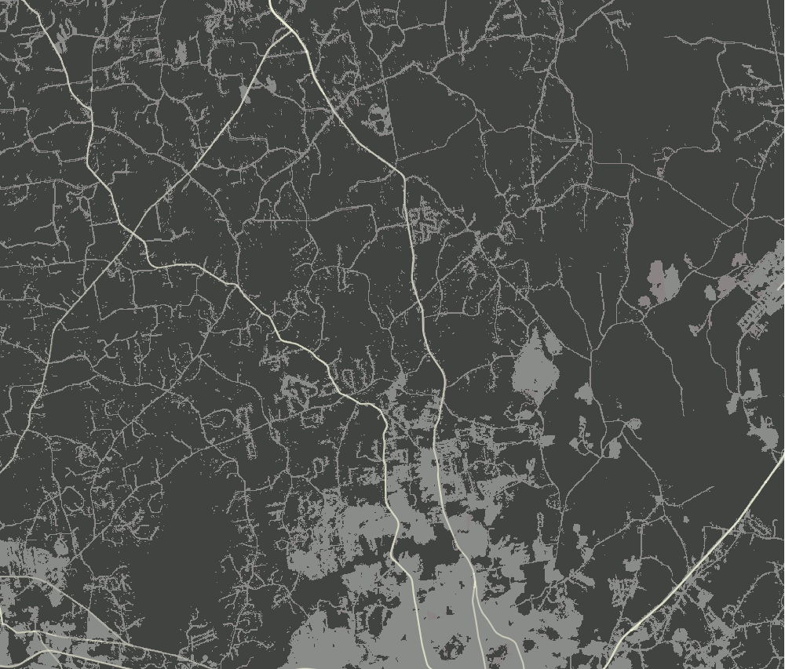
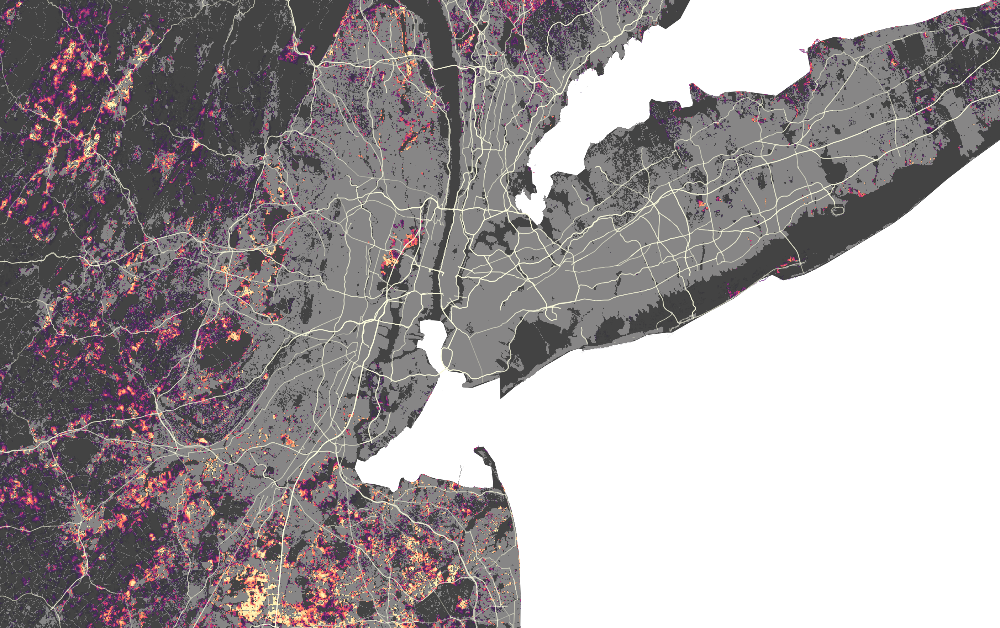
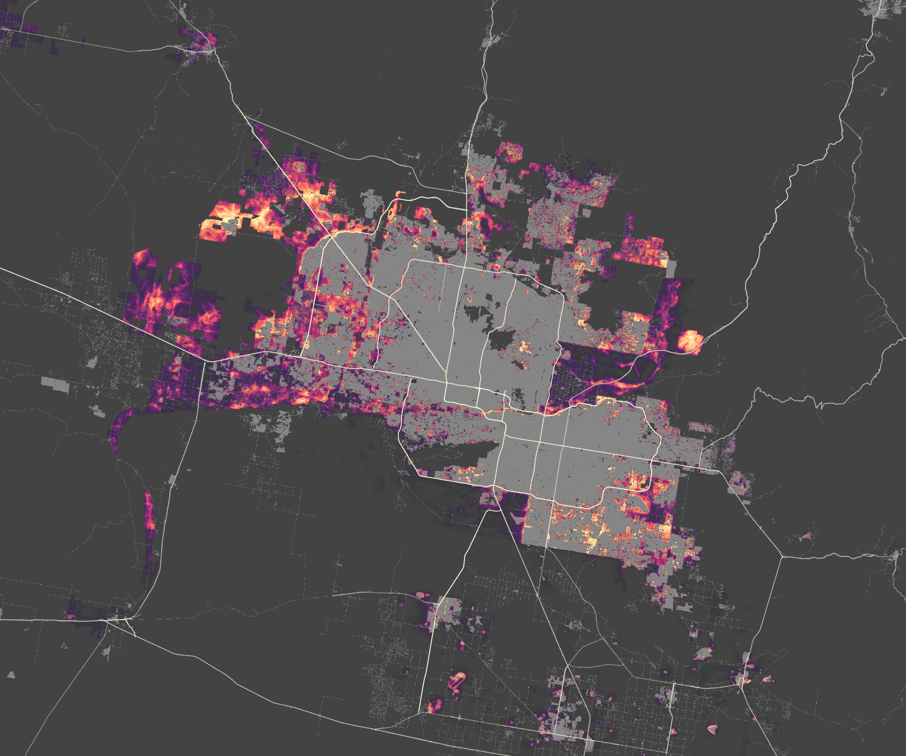
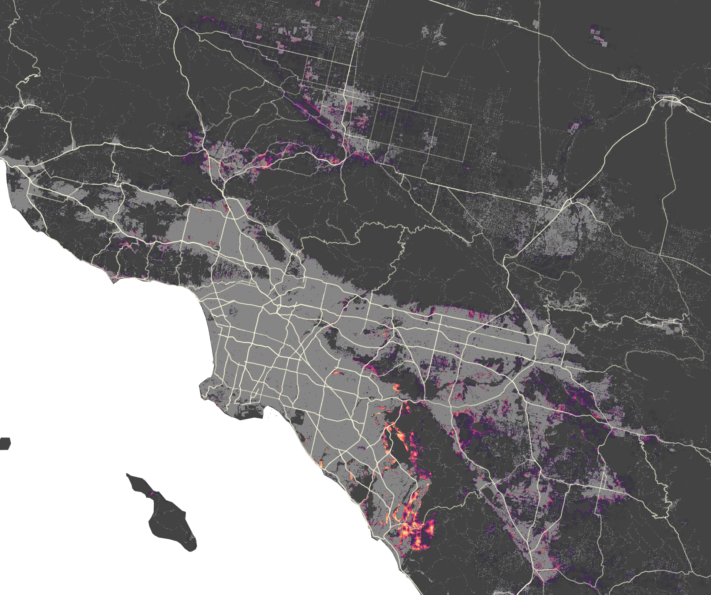
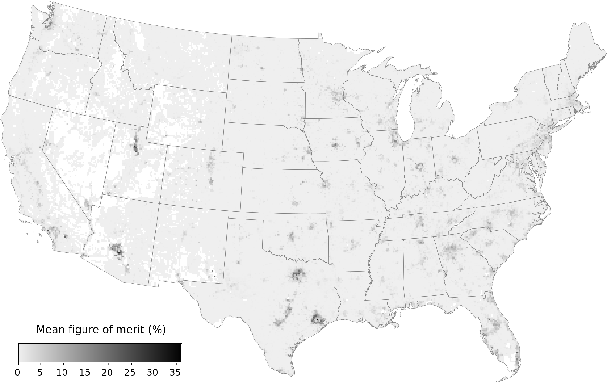
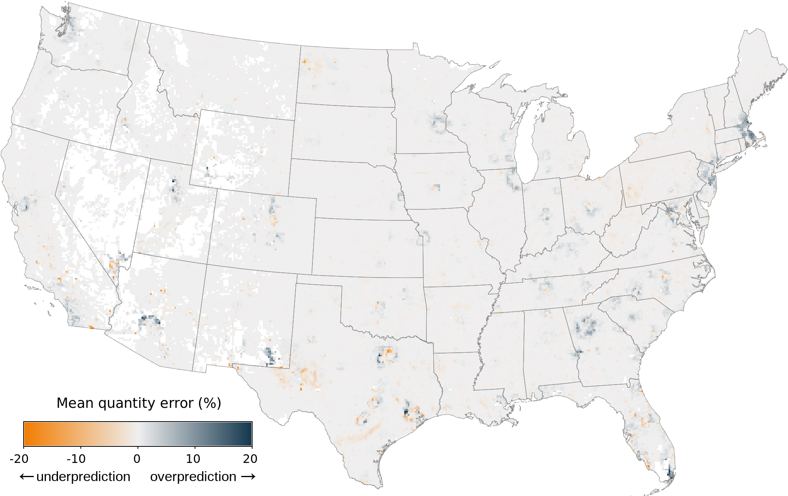

Scaling up Urban Growth Projections with FUTURES
Anna Petrasova
Center for Geospatial Analytics
NC State University
June 20th, 2023
Anna Petrasova
- Geospatial Research Software Engineer at the Center for Geospatial Analytics
- PhD in Geospatial Analytics, NC State
- GRASS GIS Development Team and Project Steering Committee Member
Motivation
- provide detailed national urbanization projections
- study urbanization trends inside and outside of floodplain
- available datasets (NLCD time-series, etc.), computing infrastructure, scalable model, and funding
CONUS urban growth projections

Data product
- across CONUS at 30-m resolution
- future urban growth from 2020 to 2100
- SSP2 “middle of the road” scenario of growth
- 50 stochastic iterations at annual time steps
- derived probabilities of new development at decadal time steps
Accessible from ScienceBase Catalog or from geospatial.ncsu.edu/research/FUTURES
Input Data
Land cover
NLCD 2001 - 2019 Land cover (urban, forest, water, wetlands)
Land cover (urban, forest, water, wetlands)
 Impervious descriptor (roads)
Impervious descriptor (roads)
Population
- past population (The National Vital Statistics System)
- county level population projections (Hauer et al. 2019)
- shared socioeconomic pathway SSP2 (Middle of the Road)
source: Hauer et al 2019
Predictors
- NED DEM (USGS)
- protected areas (PAD-US by USGS)
- USA National Commodity Crop Productivity Index
- CDC Social Vulnerability Index
- FEMA floodplain
- boundary datasets: counties, metropolitan statistical areas

SVI, source: CDC
Modeling
FUTURES
- FUTure Urban-Regional Environment Simulation (Meentemeyer et al. 2013)
- stochastic, patch-based urban growth model
- explicitly captures the spatial structure of development
- flexible in terms of predictors and scenarios

Where to develop?
Development suitability derived with logistic regression using:
- Newly developed pixels between 2001-2019
- Predictors (distance to water, roads, forest, SVI, crop index, slope)
How much land to develop?
Projects land consumption for each year and county
based on past urbanization and past and projected population:

Raleigh-Cary Metro Area
 NC
NCWhat is the size and shape?
Urban patch size and compactness calibrated from past urban change
FUTURES software
- open source GRASS GIS addon
- set of tools r.futures.*
- written in C and Python
- runs on all platforms

Find more resources at geospatial.ncsu.edu/research/FUTURES
How to test FUTURES?
Test using The Whole Tale platform for reproducible research
- a small 3-county case study
- runs online in Jupyter Lab, no installation
- allows you to test and experiment
Try at dashboard.wholetale.org/run/63f522f5b4a0197e9a9ee800
Scaling
- NCSU High Performance Computing cluster
- Efficient memory handling and parallelization in GRASS GIS
- Computation split by states along Metropolitan Statistical Areas boundaries
Results
NE Raleigh by 2100

NE Raleigh: probability

Atlanta

New York
Phoenix
Los Angeles
Validation
Hindcast approach evaluating the model's accuracy to predict historical conditions of land change
- calibrated based on 2001-2008 and simulated 2009-2019
- around 99% of without change
- prediction error split into quantity (25%) and allocation error (75%)
Validation on a grid


FAQs
How to use this data?
It's better to use the projections for large scale analysis
- certain assumptions may not hold locally
- customized model incorporating local knowledge would perform better for a specific area
How to use this data?
Use stochastic runs directly instead od probability
- probability hides the patterns

How do we define “urban”?
NLCD urban classes 21-24
- Open space (parks, golf courses, ...)
- Low, medium, high density development
Image source: Bing Maps
Data updates?
- Updates with newer landcover (NLCD 2021)
- Incorporating Puerto Rico and the U.S. Virgin Islands
FUTURES v3
Incorporates flood hazard and response (retreat, adaptation)
- Scenarios of adaptive response based on damage and social vulnerability
- Dataset available for Southeast US
Source: Sanchez et al. (in review)
Our team